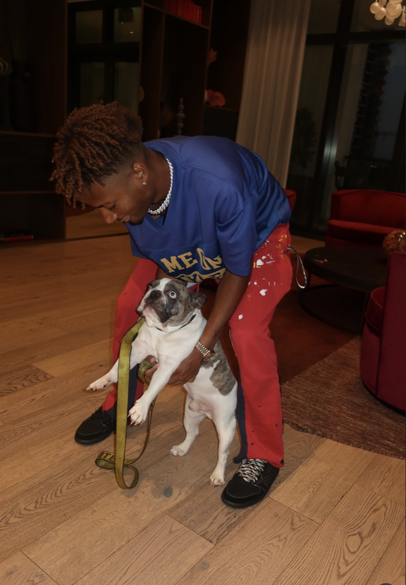
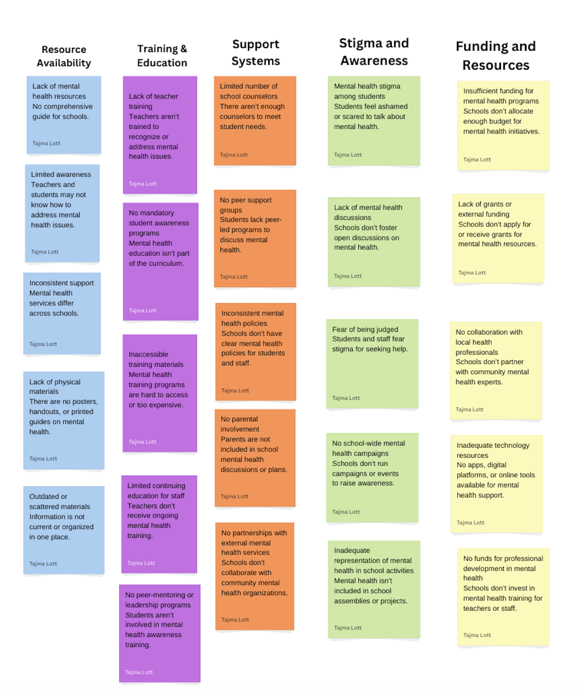
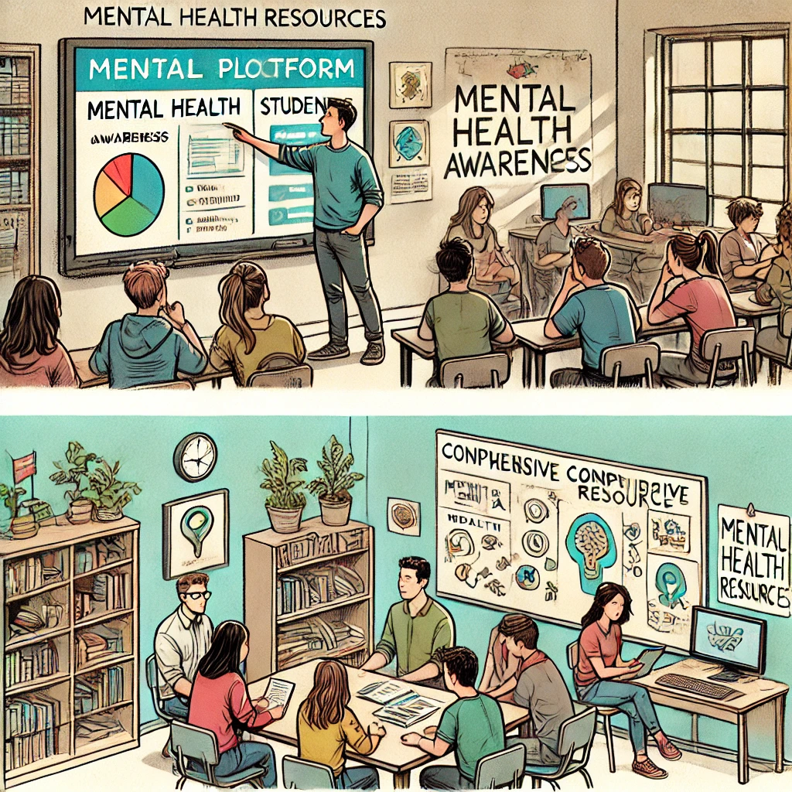
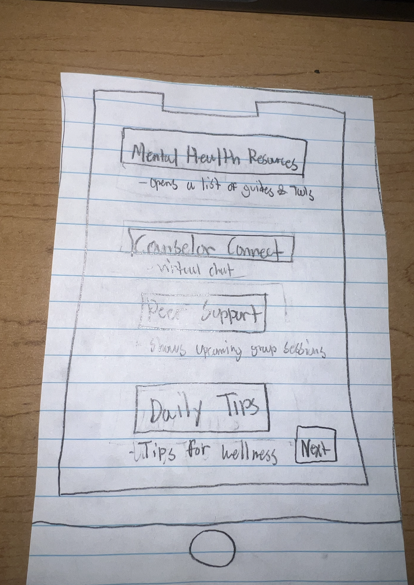

<html></html>
    <head>
        <link rel="stylesheet" href="styles.css">

        <title>CSCE 190: Tajma Lott</title>
        <link rel="stylesheet" href="styles.css"/>
    </head>
    <body>
            <h1>Tajma Lott</h1>
            <!-- About Me -->
<h2> About Me </h2>
<div class="about">

<p>
    I'm Tajma Lott, a freshman Computer Engineering major at the University of South Carolina. 
I love running, listening to music, 
    trying out adventurous activities, 
    and spending time with my friends. I am passionate about learning new things, especially in tech, 
    and always looking forward to wha is next! My mission is to leverage my passion for technology, curiosity, 
    and commitment to learning to 
    innovate and make a positive impact in the world.
</p>
</div>
            
            <h2>Skills</h2><div class="skills"></div>
            <h2>Highlighted projects</h2><div class="projects">
                <!-- Problem Statement Assignment -->
                <section class="project">
                     <a href="files/Problem Statement.pdf">
                        <h3>Problem Statement</h3>
                    </a>
                    <a href="files/Problem Statement.pdf">
                        
                    </a>
                    <p>A comprehensive resource for mental health awareness in schools does not exist.</p>
                </section>

                <!--Affinity Diagram Assignment -->
<section class="project">
    <a href="files/color.pdf">
        <h3>Affinity Diagram</h3>
    </a>
    <a href="files/color.pdf">
        
    </a>
    <p> My affinity diagram breaks down the lack of mental health resources. </p>
    </section>
<!--Sketches Assignment-->
<section class="project">
    <a href="files/sketches.pdf">
        <h3>Sketches</h3>
    </a>
    <a href="files/sketches.pdf">
        
    </a>
    <p>Using the help of Chat GPT sketch of a mobile app designed for
        mental health awareness in schools. 
    </section>

    <!--Paper Prototype Assignment-->
<section class="project">
    <a href="https://youtu.be/8Msdw7jyXUU?si=rHTdc3pIwLqOYFnr"><h3> 
        Mental Health Prototype</h3>
    </a>
    <a href="https://youtu.be/8Msdw7jyXUU?si=rHTdc3pIwLqOYFnr">
        
    </a>
    <p> My app is a simple, user-friendly platform designed to help students and teachers with mental health awareness in schools.</p>
    </section>

    <div class = "skills">
        <p><b>Category 1:</b>Details for category 1</p>
        <p><b>Category 2:</b>Details for category 2</p>
        <p><b>Resume:</b><a href="files/ Resume.pdf">Download here</a></p>
        </div>
                
            </div>
            <h2>Contact me</h2><div class="contact"></div>
            </body>
          <p>
            Phone: (803)-354-8915
            Email: Tajma.lott05@gmail.com
        </p> 
    </body>
</html>